1
Clock Domain CrossingOverview
As modern System-on-Chip (SoC) designs continue to face increasing size and complexity challenges, multiple asynchronous clock domains have been employed for different I/O interfaces. A CDC-based (Clock Domain Crossing) design is a design that has one clock asynchronous to, or has a variable phase relation with, another clock. A CDC signal is a signal latched by a flip-flop (FF) in one clock domain and sampled in another asynchronous clock domain. Transferring signals between asynchronous clock domains may lead to setup or hold timing violations of flip-flops. These violations may cause signals to be meta-stable. Even if synchronizers could eliminate the meta-stability, incorrect use, such as convergence of synchronized signals or improper synchronization protocols, may also result in functional CDC errors. Functional validation of such SoC designs is one of the most complex and expensive tasks. Simulation on register transfer level (RTL) is still the most widely used method. However, standard RTL simulation can not model the effect of meta-stability.
Within one clock domain, proper static timing analysis (STA) can guarantee that data does not change within clock setup and hold times. When signals pass from one clock domain to another asynchronous domain, there is no way to avoid meta-stability since data can change at any time.
As the CDC errors are not addressed and verified early in the design cycles, many designs exhibit functional errors only late in their design cycles or during post-silicon verification. Several coverage metrics are proposed to measure the validation's adequacy and progress, such as code based coverage, finite state machine coverage, and functional coverage. Nevertheless, these coverage metrics do not have direct relations with CDC issues.
To address clock domain problems due to meta-stability and data sampling issues, designers typically employ several types of synchronizers. The most commonly used synchronizer is based on the well-known two-flip-flop circuit. Other types of synchronizers are based on handshaking protocols or FIFOs. In a limited number of cases it may be useful to employ dual-clock FIFO buffers or other mechanisms optimized for domains with similar clock frequencies.
To accurately verify clock domain crossings, both structural and functional CDC analysis should be carried out. Structural clock domain analysis looks for issues like insufficient synchronization, or combinational logic driving flip-flop based synchronizers. Functional clock domain analysis uses assertion-based verification to check the correct usage of synchronizers. Assertions may be used to find problems such as data stability violations when going from a fast clock domain to a slower one. Assertions generated in PSL or other assertion languages such as OpenVera or SystemVerilog, can then be used in formal model checking or simulation.
This chapter is organized in the following sections:
- Background - Prepares the background required for further discussions.
- Synchronization Techniques - Discusses the synchronization techniques.
- CDC Analysis - Discusses the various steps of CDC analysis.
- Leda-CDC Flow - Provides information on the basic Leda-CDC tool flow.
- Automatically Generated CDC Assertions - Provides a detailed specification of the Leda supported assertions.
- CDC AEP Rule Usage & Naming Conventions for Automatically Generated CDC AEP Files - Provides further detail of assertion related topics.
Background
Clock domain
A clock domain is a part of a design that has a clock that operates asynchronous to, or has a variable phase relationship with, another clock in the design. For example, a clock and its derived clock (via a clock divider) are in the same clock domain because they have a constant phase relationship. But, 50MHz and 37MHz clocks (whose phase relationship changes over time) define two separate clock domains. Figure 1 illustrates three different clocks in a design, but synchronous to each other. CLK, its inversion and D1 (derived from CLK) are synchronous to each other.
Figure 1: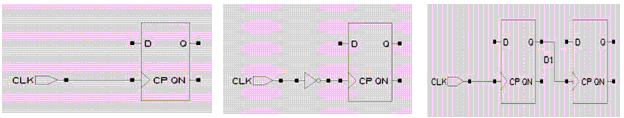
Synchronous Clock
A clock domain crossing signal is a signal from one clock domain that is sampled by a register in another clock domain. More details of the clock origin/domain inference engine are given in [1].
Meta-stability
Every flip-flop (FF) that is used in any design has a specified setup and hold time, or the time in which the data input is not legally permitted to change before and after a sampling clock edge. This time window is specified as a design parameter precisely to keep a data signal from changing too close to another synchronizing signal that could cause the output to go meta-stable.
Figure 2: Setup and hold time of a Flip-flop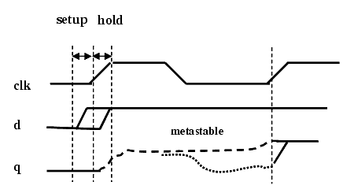
However, if some input (say d in Figure 2) violates the setup and hold time of a FF, the output of the FF (q in Figure 2) keeps oscillating for an indefinite amount of time. This unstable value may or may not non-deterministically converge to a stable value (either 0 or 1) before the next sampling clock edge arrives.
Example - Consider the 1-bit CDC signal adat, which is sampled by register bdat1 in Figure 3. Since adat comes from a different clock domain (aclk), its value can change at any time with respect to bdat1's clock (bclk). If the value of adat changes during bdat1's setup and hold time, the register bdat1 might/might not assume a state between 0 and 1. In this state, the register is said to be meta-stable. A meta-stable register may/may not (unpredictably) settle to either 0 or 1, causing illegal signal values to be propagated throughout the rest of the design.
Figure 3: Meta-stability scenario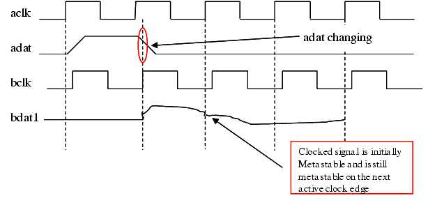
In a multi-clock design, meta-stability is inevitable, but there are certain design techniques that help to avoid the chance of getting meta-stable. The following section provides an overview of different synchronization techniques.
Synchronization Techniques
The main responsibility of a synchronizer is to allow sufficient time such that any meta-sable output can settle down to a stable value in the destination clock domain. The most common synchronizer used by designers is two-flip-flop (2-FF) synchronizers as shown in Figure 4. Usually the control signals in a design are synchronized by 2-FF synchronizers.
Figure 4: A 2-FF synchronizer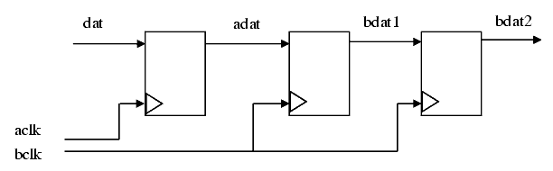
Synchronization of Control Signals with 2-FF Synchronizers
In a 2-FF synchronizer, the first flip-flop samples the asynchronous input signal into the destination clock domain and waits for a full destination clock cycle to permit any meta-stability on the stage-1 output signal to decay, then the stage-1 signal is sampled by the same clock into a second stage flip-flop, with the intended goal that the stage-2 signal is now a stable and valid signal synchronized into the destination clock domain. It is theoretically possible for the stage-1 signal to still be sufficiently meta-stable by the time the signal is clocked into the second stage to cause the stage-2 signal to also go meta-stable.
However, note that the meta-stability is a probabilistic phenomenon. The meta-stable output converges to a stable value with time. Therefore, even if the input to the stage-2 FF still remains meta-stable, the probability that the output of the stage-2 FF will remain meta-stable for a full destination clock cycle is asymptotically close to zero. This calculation of the probability of the time between synchronization failures (MTBF) is a function of multiple variables including the clock frequencies used to generate the input signal and to clock the synchronizing flip-flops. For most synchronization applications, a 2-FF synchronizer is sufficient to remove all likely meta-stability.
Even if a 2-FF synchronizer helps to prevent propagation of meta-stable values, for the correct operation of the design, some other issues needs to be tackled. These issues are explained in the following sections.
Input Data Stability to Avoid Data Loss
A synchronizer circuit ensures avoiding propagation of meta-stability into the destination clock domain, but it can't ensure propagation of correct value as the meta-stable signal non-deterministically converges to any stable value (1 or 0). However, for correct operation of the design, every transition on the input signal needs to be correctly propagated to the destination domain. To ensure preventing data loss (losing input transitions), the input signal needs to hold its value a minimum amount of time such that there is at least a single destination sampling clock edge, which samples the input value correctly (No setup/hold violation; Figure 5 gives such an example). This stability condition on the input signal is usually checked by putting assertions. For more information, see the section "Flip-flop Synchronizers".
Figure 5: Stability of input signal value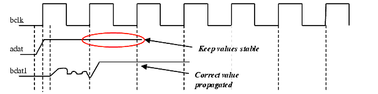
Gray Encoding to Avoid Data Incoherence (For Vector CDC Control Signals)
Similar to the case of syncing a single bit control signal, the natural way to transfer a vector control signal is to model each bit of the vector to be separately synchronized by a FF synchronizer. You have already seen that even if you use FF synchronizers, it usually takes more than one cycle to propagate correct input values to the destination domain. Now consider a case where every bit of the vector takes a transition very close to the destination clock edge. Also assume that, by virtue of meta-stability, only some of these transitions are correctly captured by the destination domain in the first cycle. Now, if the bit values of the vector decide the state of the destination domain, after the first cycle, the destination domain may move into an invalid state.
Figure 6: Scenario indicating Data Incoherence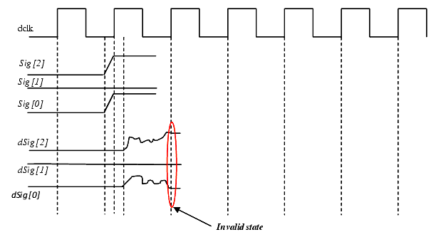
Example - Suppose a vector control signal Sig [2:0] crosses from Domain 1 to Domain 2. Signal Sig also decides the state of Domain 2 and you assume that the value "100" of Sig [2:0] indicates an invalid state for Domain 2. Now, think of a situation, where the signal Sig wants to change its value from "000" to "101" (both indicate valid states). This requires the two bits Sig [0] and Sig [2] to transit simultaneously. Both these transition occurs very close to the destination sampling clock edge (see Fig 6). By virtue of meta-stability, transition on Sig [2] gets captured correctly and the transition on Sig [0] is missed. In this way, in the first cycle of the destination clock, the system moves to state "100" which is invalid.
This case would not have happened, if changing the states of the design requires changing only a single bit of the vector (Sig in this case). In case of a single bit transition, either that transition would be captured in the destination domain or not. This way the design either stays in the previous state or move to a valid state. Therefore, for vector control signals (multi-bit signals, such as address buses), the usual solution is to use a Gray code when crossing a clock domain boundary. A Gray code ensures that only a single bit changes as the bus counts up or down. The presence of gray coding on vector control signal can be checked by using assertions. For more information, see the section "Gray Code Encoding for Vector Control Signals".
Synchronization of CDC Data Signals
One of the challenges in designing a multi-clock based system is to enable correct transfer of data buses from one clock domain to another. The difficulty arises, as individual bits of a data bus can change randomly while changing clock boundaries. Using synchronizers/gray code to handle the passing of data bus is generally unacceptable.
Three common methods for synchronizing data between clock domains are:
- Using MUX based synchronizers.
- Using Handshake signals.
- Using FIFOs (First In First Out memories) to store data with one clock domain and to retrieve data with another clock domain.
Passing Data through MUX Synchronizer
As shown in the following figure (Figure 7), in a MUX synchronizer, the control path is usually FF-synchronized while the synced-in control signal is used to synchronize the data paths.
Figure 7: A MUX synchronizer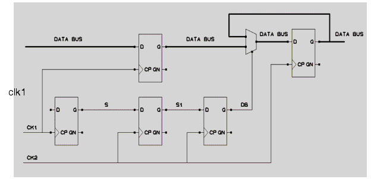
Handshaking Data between Clock Domains
Data can be passed between clock domains using a set of handshake control signals, depending on the application and the paranoia of the design engineer. When it comes to handshaking, the more control signals that are used, the longer the latency to pass data from one clock domain to another. The biggest disadvantage in using handshaking is the latency required to pass and recognize all of the handshaking signals for each data word that is transferred. Figure 8 shows a typical handshake synchronizer.
Figure 8: A Handshake Synchronizer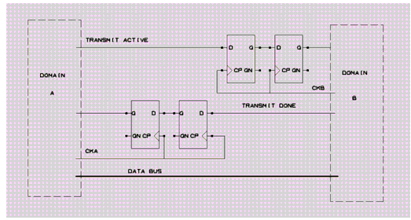
For many open-ended data-passing applications, a simple two-line handshaking sequence is sufficient. The sender places data onto a data bus and then synchronizes a "req" signal (request) to the receiving clock domain. When the "req" signal is recognized in the destination clock domain, the receiver clocks the data into a register (the data should have been stable for at least two/three sampling clock edges in the destination clock domain) and then passes an "ack" signal (acknowledgement) through a synchronizer to the sender. When the sender recognizes the synchronized "ack" signal, the sender can change the value being driven onto the data bus.
Passing Data by FIFO between Clock Domains
One of the most popular methods of passing data between clock domains is to use a FIFO. A dual port memory is used for the FIFO storage. One port is controlled by the sender, which puts data into the memory as fast as one data word (or one data bit for serial applications) per write clock. The other port is controlled by the receiver, which pulls data out of memory; one data word per read clock. Two control signals are used to indicate if the FIFO is empty, full, or partially full. Two additional control signals are frequently used to indicate if the FIFO is almost full or almost empty. In theory, placing data into a shared memory with one clock and removing the data from the shared memory with another clock seems like an easy and ideal solution to passing data between clock domains. For the most part it is, but generating accurate full and empty flags can be challenging.
Figure 9: A dual-clock FIFO Synchronizer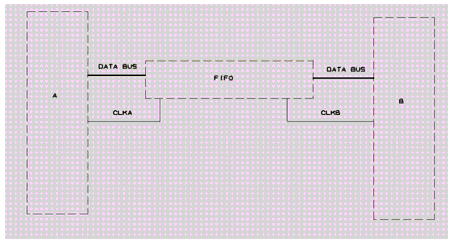
User-defined Synchronizers
Sometimes, you may specify some cells to be synchronizers. If this cell is found on the path between the FF, the path has to be considered as synchronized. Note that the cell itself may have other inputs than the source flip-flop as shown in the following illustration. The way of specifying a synchronizer is explained in chapter 2, section "Using Tcl Command 'set_cdc_synchronizer'".
Figure 10: User-defined Synchronizer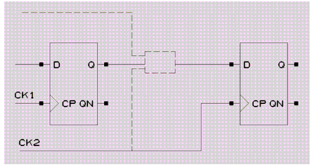
CDC Analysis
Following are the basic steps for CDC analysis and checking (irrespective of toolset implementation):
Structural Analysis to Identify CDC Signals and Appropriate Synchronizers
The most important task of any CDC structural analyzer is to find out all the signals (CDC) that cross clock boundaries. In Leda, rule NTL_CDC01 (For more information, see the section "CDC Ruleset" in chapter 2.) reports all the un-synchronized CDC paths. However a CDC path may be synchronized in the destination clock domain. Thus, identification of synchronization schemes is very important to avoid reporting false CDC reports. Automatic detection of synchronizers is very tough and may depend on the underlying design principle. Therefore, sometime, the designer needs to provide additional information for the underlying synchronization schemes.
Once extraction of information for all the CDC paths (synchronized and un-synchronized) is over, you need to see whether there are structural defects before and after the synchronizers.
Structural Analysis to Identify Structural Defects Before and After Synchronization
Many design teams choose a few synchronizer styles, apply them to all signals crossing clock domains and enforce their usage by design style rules and design reviews. Although proper synchronizers are essential for multi-clock designs, they are insufficient to avoid all possible problems regarding signals crossing clock domains. Considerable extra care must be taken in the design process to avoid these problems. Some of the structural problems that may cause functional errors in multi-clock based systems are as follows.
Convergence in the Crossover Path
Using combinational elements in a CDC path before synchronization can lead to functional problems. For example, it is important that glitches in the driving clock domain not be propagated into the receiving clock domain. Since the flip-flops in the receiving clock domain can sample the signals from the driving clock domain at any point, there is no way through static timing analysis to ensure that the glitch will not be propagated. Figure 11 shows an example of combinational logic (convergence) that could cause a glitch to pass from one clock domain to another. Rule NTL_CDC02 detects this issue.
Figure 11: Glitch propagation due to convergence in CDC Path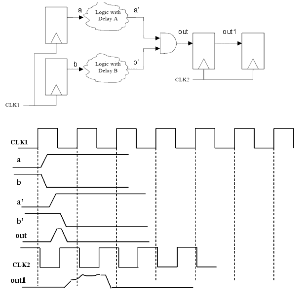
Divergence in the Crossover Path
Design styles which allow divergent logic on a CDC signal to multiple synchronization paths, may cause functional errors. As Figure 12 illustrates, a single control signal (Trans_en) from the source clock domain (clk1) is used to activate both the "addr" and "data" transfer unit in the destination clock domain (clk2). The purpose is to enable both the logics at the same time. To model this, fan-outs of Trans_en has been used before the synchronization takes place. However, due to the propagation delay and different meta-stable settling times, the two fan-outs ('addr_en' and 'data_en') could reach the Address and Data transfer logics at different times. Therefore these two logics may start at different time causing functional errors. This type of structure should be avoided by fanning out a single FF synchronized 'common enable' signal to the two transfer logics. Rule NTL_CDC03 detects this issue.
Figure 12: Divergence in the crossover path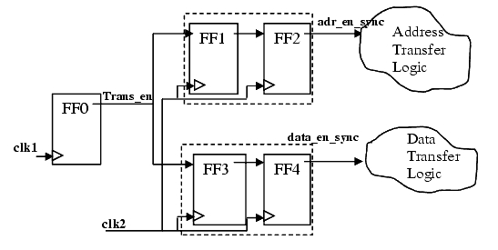
Divergence of Meta-stable Signal
Using a meta-stable signal in a design can be erroneous. Therefore multiple fan-out of the output of the first FF of a FF synchronizer can cause functional errors. Rule NTL_CDC04 detects this issue.
Figure 13: Divergence of meta-stable signal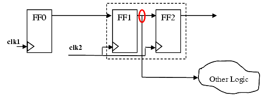
Re-convergence of Synchronized Signals
Synchronization and glitch elimination alone are not enough to ensure reliable transfer of data across clock domains. When a signal goes meta-stable, a synchronizer settles it down, but cannot guarantee the precise number of cycles before the valid signal is available in the receiving clock domain. Therefore, if (1) two independent signals or (2) bits of a multi-bit signal are independently synchronized (using same type of synchronizers or different types of synchronizers), the bits may arrive in the receiving clock domain skewed with respect to one another. A very simple form of re-convergence is shown in Figure 14. Rule NTL_CDC05 and NTL_CDC07 detect this issue.
Figure 14: The simplest form of re-convergence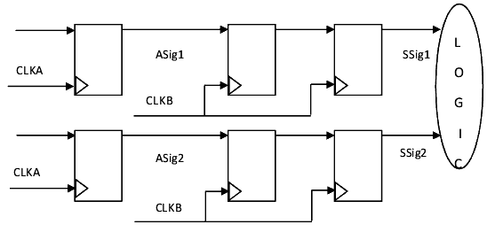
Therefore, even when meta-stability does not occur, any pair of bits can get out of synchronization if routing differences and electrical effects cause the two bits to have different delays before reaching their respective synchronizers. It is possible for one synchronizer to sample its input and capture a signal change before the other synchronizer captures the change, at which point the two copies of the signal will be skewed by a cycle and no longer correlated.
Leda has six rules that check all the above structural checks for CDC signals. The purpose of these rules is to provide the following information. Detailed description of all the Leda structural checks is provided in chapter 2.
a. NTL_CDC01 - Reports all the unsynchronized CDC paths in the design.
b. NTL_CDC02 - Reports all convergence in the crossover paths in the design.
c. NTL_CDC03 - Reports all divergence in the crossover paths in the design.
d. NTL_CDC04 - Reports divergence of any meta-stable signal in the design.
e. NTL_CDC05/07 - Reports all kinds of re-convergence of synchronized signals in the design. There is a subtle difference between rule NTL_CDC05 and NTL_CDC07. For more information about the difference, see the section "CDC Ruleset" in chapter 2.
Determination and Validation of Appropriate Properties for Every Synchronizer
Just having a synchronization circuit connected is only part of the solution; the associated logic must interact correctly with the synchronization circuit to ensure valid operation. To ensure this, assertions need to be specified that check correct functionality of the synchronization circuits and validates correct use of the synchronizers by the environment in which they are instantiated. You automatically specify these properties once for every synchronizer and automatically attach them to all instances of the corresponding synchronization building blocks. The supported property checks for CDC synchronization circuit elements are given as follows. For more information about these property specifications, see the section "Automatically Generated CDC Assertions".
Flip-flop Synchronizer
MUX Synchronizer
- Control signal stability assertions
Handshake Synchronizer
- Control signal stability assertions
- Data signal stability assertions
FIFO Synchronizer
- Control signal stability assertions
- Data signal stability assertions
- Handshake protocol check assertions
- Control signal stability assertions
- Gray coded assertions for read and write pointers
- FIFO protocol (full/empty check) assertions
- Data integrity checks
A more complete description of the CDC AEP (automatically extracted properties) usage is given in the section "CDC AEP Rule Usage".
Leda - CDC Flow
The complete Leda CDC flow is given in Figure 15. The main CDC related modules have been colored. The CDC verification engine takes help of the Magellan/VCS for checking the Leda CDC assertions (statically/dynamically).
Figure 15: The complete Leda CDC flow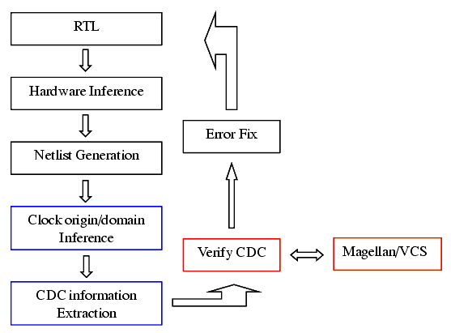
Automatically Generated CDC Assertions
Structural analysis primarily checks whether there exists a synchronizer in the CDC paths. Having a synchronizer connected only solves the verification problem partially. You additionally need to check the following two features.
1. The environment (associated logic) must interact properly with the synchronizer.
2. The synchronizer itself behaves correctly.
These two checks are mandatory to ensure valid operation in real life. The AEP (automatically extracted properties) engine of Leda generates and binds assertions that check correct functionality of the synchronizers and validates correct use of the synchronizers by its environment. To identify the synchronizers, the AEP engine uses the Leda structural analyzer. In the following paragraphs, you will categorically enumerate the synchronizer related checks for ABV (assertion based verification).
Flip-flop Synchronizers
Description
The FF synchronizers (shown in Fig 16) form the basic building block for most of the existing synchronization circuits. A simple FF synchronizer consists of m (> 1) FF modeled as a shift register running on the 'destination clock'. Once the presence of a FF synchronizer having m stages is detected, the following property is generated to ensure that the device functions correctly in presence of this synchronizer.
If no assumptions are made about the relationship between the 'source' and 'destination' clock domains, then the following property ensures that all input signal values can be reliably transported to the synchronizer output.
Input data values must be stable for m+1 destination clock edges.
Figure 16: Flip-flop Synchronizers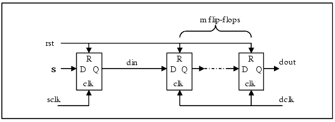
Implementation
Example SVA codes for the above properties are given as follows. This assertion verifies the stability of din as observed in the destination clock domain. Signal rst is the reset signal (if any, with the appropriate polarity) extracted from the synchronizer FF, din is the single bit input to the first FF of the synchronizer.
property p_stability; disable iff (rst) @(<appropriate_edge> dclk) !$stable (din) |=> $stable (din)[*m] ); endproperty A_p_stability: assert property (p_stability);MUX Synchronizers
Description
Designs typically have both control and data paths. As shown in the following figure (Fig 17), the control paths are usually flop-synchronized while the synced-in control signals are used to synchronize the data paths. Here, these data paths use a controlled synchronizer MUX for crossing clock domains. These control MUXs are sometimes called D-MUX, MUX synchronizer, or sync MUX.
Figure 17: MUX synchronizers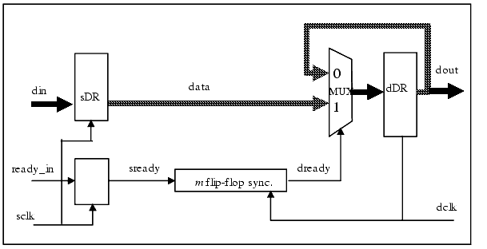
The MUX synchronizer has the following functional requirements to ensure correct results.
- sready must be stable for m+1 number of destination clock cycles (modeled by property p_stability as explained in the section "Flip-flop Synchronizers").
- data should remain stable in the destination clock domain during the data transfer phase (indicated by the time dready is asserted in dclk domain and until dready deasserted in dclk domain).
Implementation
Stability of Data
property p_data_stable; disable iff (drst) @(<appropriate edge> dclk) ((dready) |=> ($stable (data) || (!dready)); endproperty A_p_data_stable: assert property (p_data_stable);Handshake Synchronizers (Push)
Description
There are different types of handshake synchronizers in practice, but most come down to the fundamental working principle of synchronizing a single-bit request into the destination clock domain and waiting for a synchronized version of the acknowledge to come back. The differences in the architecture of the handshake synchronizers take place because of the higher level protocols for the associated interfaces, data management, etc.
The handshake synchronizers use two m-flip-flop synchronizers to generate request and acknowledge signals. The associated properties are given as follows.
- Input Data Stability for the m-flip-flop Synchronizers - Input data values must be stable for m+1 destination clock edges (Re-use of the assertion in 6.a)
- Protocol check - The sender and the receiver should follow the handshake protocol correctly.
- Data Stability - The data must be present when request is asserted on the destination and remain stable until the acknowledgment is generated.
Figure 18: Handshake synchronizers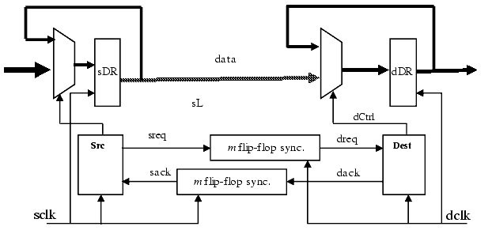
Implementation
The following assertions cover the proper use of the m-flip-flop synchronizers, the handshake protocol, and the corresponding data stability.
1. Input Data Stability for the m-flip-flop synchronizers
Request signal (sreq) of the sender and Acknowledgement signal (dack) must be stable for m+1 'dclk' and 'sclk' cycles respectively as implemented in the section "Flip-flop Synchronizers".
2. Protocol check
a. The sender should continue to assert the sreq signal until sack is asserted at the source clock (sclk) domain.
b. The sender should not assert a new request (sreq) until the acknowledgement for the previous transfer is de-asserted in the source clock (sclk) domain.
A SVA property that covers the above two checks is given as follows.
property src_conformance (clk, rst, ssig, dsig); disable iff (rst) @(<appropriate edge> clk) ssig && !dsig |=>ssig; endproperty A_src_conformance_req: assert property (src_conformance (sclk, srst, sreq, sack)); A_src_conformance_new_req: assert property (src_conformance (sclk, srst, !sreq, !sack));Similar properties for the destination clock domain (dclk) are given as follows.
- The receiver should continue to assert the dack signal till dreq is asserted at the destination clock (dclk) domain.
- The receiver should not assert a new acknowledgement (dack), until a new request is received in the destination clock (dclk) domain.
A SVA property that covers the above two checks is given as follows.
property dest_conformance (clk, rst, ssig, dsig); disable iff (rst) @(<appropriate edge> clk) ssig |=>dsig; endproperty A_dest_conformance_req: assert property (dest_conformance (dclk, drst, dreq, dack)); A_dest_conformance_new_req: assert property (dest_conformance (dclk, drst, !dreq, !dack));3. Data stability
- The receiver should continue to receive stable data till it asserts the acknowledgment.
The following SVA property implements the above two scenarios.
property data_stability (clk, rst, dreq, dack, data); disable iff (rst) @(<appropriate edge> clk) (dreq && !dack) => $stable (data); endproperty A_data_stability_dest: assert property (dest_stability (dclk, drst, dreq, dack, data));The checks for Pull synchronizers are similar.
Dual Clock FIFO Synchronizers
Description
Another common CDC synchronization circuit, which is used when the high latency of the handshake protocols cannot be tolerated, is the dual-clock asynchronous FIFO as shown in Fig 19. Although many implementation variations exist, the basic operation is the same; data is written into a dual-port RAM block from the source clock domain and the RAM is read in the destination clock domain. Gray-coded read and write pointers are passed into the alternate clock domain (using two m-flip-flop synchronizers) to generate full and empty status flags. The following properties are generated for the dual-clock asynchronous FIFO:
- The producer never writes when the FIFO is full.
- The consumer never reads when the FIFO is empty.
- Read and Write pointers must be gray-coded at source.
- Checks for data integrity (FIFO preserves Order and Data Value).
Figure 19: FIFO Based Synchronizer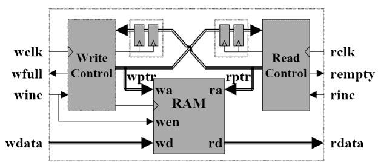
Implementation
The following SVA code provides a possible implementation of these checks. The p_data_integrity assertion starts a new thread with a unique cnt value whenever wdata is written to the FIFO and checks the rdata value against the local data variable whenever the corresponding read occurs. The first_match is required in p_data_integrity to ensure the property checks rdata on the first occurrence of a read with the corresponding cnt, otherwise it waits for ever for a rdata match at the rcnt value. You should create a module M, which contains the assertions. It is then bound to the nearest top-level module instance containing the FIFO code.
No Load on Full & No Read on Empty
property p_bad_access(clk, inc, flag); @(<appropriate_edge> clk) inc |-> !flag; endproperty : p_bad_access //-- Property for bad write access A_p_bad_access_write: assert property (p_bad_access (wclk,winc,wfull)); //-- Property for bad read access A_p_bad_access_read: assert property (p_bad_access (rclk,rinc,rempty));Order and Data Preservation
//- The following code mimics the grey coded read and write pointers. If you have //- those pointers automatically identified from the design, this is not required bit [$bit (waddr)-1:0] rcnt=0, wcnt=0; always @(posedge wclk or negedge wrst_n) begin if (wrst_n) wcnt <= 0; else if (winc) begin wcnt = wcnt + 1; end end always @(posedge rclk or negedge rrst_n) begin if (rrst_n) rcnt <= 0; else if (rinc) begin rcnt = rcnt + 1; end end property p_data_integrity int cnt; logic [$bits (wdata)-1:0] data; disable iff (!wrst_n || !rrst_n) @(posedge wclk) (winc, cnt = wcnt, data = wdata) |=> @(posedge rclk) (first_match (##[0:$] (rinc && (rcnt == cnt))) |-> (rdata == data)); endproperty : p_data_integrity A_p_data_integrity: assert property (p_data_integrity);Gray Code Encoding for Vector Control Signals
Description
This check addresses multi-bit signals (bit vectors or a collection of individual signals) that originate in one clock domain with the clocking event sclk and then re-converge in another clock domain with the clocking event dclk without using any of the above handshake-based synchronization schemes. Such signals must all have m-flip-flop synchronizers and in addition they must be Grey-code encoded before entering the synchronizers. In this way, when there is a change from one state of the multi-bit signal to another, only one bit changes at a time. It ensures that the destination side will not sample inconsistent state values due to different skews and meta-stability delays on each bit. The Gray code may be decoded on the destination side, after the individual synchronizers.
Figure 20: Multi-bit Data Transfer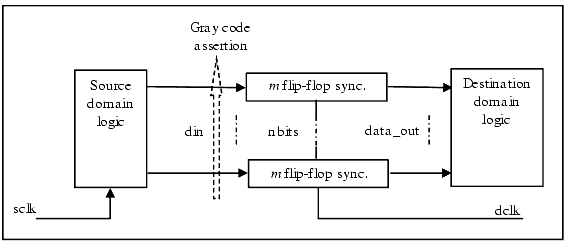
Once such multi-bit signals are identified, the purpose of the function checks is to verify that state changes on the source side before entering the bit synchronizers follow the Gray code.
Implementation
Each individual m-flip-flop synchronizer must satisfy the signal stability properties indicated in 1.1.2. In addition, the Gray code assertion verifies that whenever there is a change of value on data_in the next value differs from the preceding one only in one bit. The vector data_in is formed by concatenating all the variables that are part of the multi-bit signal.
property p_gray_coded (clk, rst,data); disable iff (rst) @(<appropriate_edge> clk) !$stable (data) |-> ($onehot (data ^ $past (data)); endproperty A_p_gray_coded: assert property (p_gray_coded (dclk, rst, din));In the following section, you will read how Leda generates these assertions and how to use these assertions for verification.
CDC AEP Rule Usage
Clock Domain Crossing is a global problem and Leda currently has an effective solution for CDC verification. In this section, the CDC rules that generate assertions for verifying functionality of each of the CDC synchronizer recognized in the design (NTL_CDC06, and NTL_CDC14 - NTL_CDC16) are elaborated. In addition, there is a rule NTL_CDC08, which checks for the correct implementation of grey coding for each vector CDC control signal detected in the design.
The purpose of adding these five rules is to provide the following information:
- NTL_CDC06 - Indicates that FF synchronizers have been used in the design. For each of these FF synchronizers, Leda generates assertion for checking the signal stability property of the associated CDC control signal.
- NTL_CDC08 - Indicates that vector CDC control signals have been used in the design. For each of such vector CDC control signal, Leda generates assertion for checking whether the associated vector has been gray coded.
- NTL_CDC14 - Indicates that MUX synchronizers have been used in the design. For each of such MUX synchronizers, Leda generates assertions for checking signal stability of the associated control and data signals.
- NTL_CDC15 - Indicates that Handshake (Push/Pull) synchronizers have been used in the design. For each of such Handshake synchronizers, Leda generates assertions for checking signal stability of the associated control and data signals. In addition, it generates assertions for checking the correctness of the associated handshake protocol.
- NTL_CDC16 - Indicates that FIFO synchronizers have been used in the design. For each of such FIFO synchronizers, Leda generates assertions for checking empty/full criterion of the associated FIFO. In addition, it generates assertions for checking the (a) data signal integrity of the FIFO, and (b) gray coding of the FIFO read/write pointers.
Furthermore, the detailed structural analysis statistics for the CDC synchronizers (such as the numbers, locations etc.) can be accessed in the following ways:
- While using Tcl mode (switch leda +tcl_shell), there is a command called 'report_cdc_info', which displays all types of detected CDC structures.
- There are 7 rules (NTL_CDC01, NTL_CDC01_0, NTL_CDC01_1, ..., NTL_CDC01_6) which when selected displays all types of CDC structures (synchronized, unsynchronized) detected in a design by Leda.
The section "CDC Tcl Interface" provides details of the current CDC Tcl interface. Additionally, each of the CDC assertion specific rules NTL_CDC14 - NTL_CDC16 also provides signal specific information about the CDC synchronizers. An example is provided in the section "CDC Analysis".
Naming Convention for Automatically Generated CDC AEP Files
For each of the rules specified in previous section, Leda generates a separate assertion file. This file contains the template/definition for the associated assertion. The naming convention of the assertion files (also definitions) follows the specific issue for which the assertion has been generated. For example, 'aep_signal_stability.v' file contains assertion definition for checking the control signal stability. The generated file names along with their purposes are given as follows:
- aep_signal_stability.v - Checks control signal stability.
- aep_mux_data_signal_stability.v - Checks data signal stability of a MUX synchronizer.
- aep_handshake_data_signal_stability.v - Checks data signal stability of a Handshake synchronizer.
- aep_handshake_protocol_check.v - Checks handshake protocol checks for a Handshake synchronizer.
- aep_fifo_validate_assertions.v - Checks fifo properties (full/empty, data integrity) for a FIFO synchronizer.
Each of these assertion definition files are generated only once. As every complex synchronizer (MUX, FIFO, and Handshake) uses FF synchronizers for synchronizing the control signals, aep_signal_satbility.v is also re-used for each of them.
Binding the Assertion Definitions to the Design
The generated assertion definitions are attached to the design signals using a set of 'bind' statements. These bind statements are generated in a separate file named 'leda_top_properties.v'. As there can be multiple instances of a specific synchronizer, for each of these instances, a separate bind statement is generated. The instance name of the assertion definitions (used in the bind statements) is numbered.
The general idea for generating properties is to use prepackage modules containing assertions and bind them to the verified design. The bind should try to bind the lowest possible module in the design hierarchy in order to allow reduction of the design size for the formal tool. The bind command will have the general following syntax:
bind <property_module_name> #( <parameters> ) <bind_instance_name> ( <port_list>);where, <bind_instance_name> is of the form:
i_<RULE_LABEL>_<INSTANCE_NUMBER>For example if there are three FF synchronizers detected in a design, there would be one control signal stability assertion definition and three separate bind statements generated with three unique assertion instances namely - i_NTL_CDC06_1, i_NTL_CDC06_2, and i_NTL_CDC06_3.
Sometimes, if you want to avoid explosion of the simulation time or Magellan running time, you can also bound the number of properties that are generated. The set_max_properties command placed in the design configuration file allows controlling this number. This command is not specific to the CDC Manager; it is part of the property generation manager.
set_aep_max_properties -value max_valueUsing Generated Assertions in VCS and Magellan
The generated assertions can be verified on the design using (1) VCS (simulation based verification) or (2) Magellan (formal verification). To simplify building of the assertions, a file (named leda_prop_file.lst) containing the list of automatically generated files is created. As a result, you only need to attach file 'leda_prop_file.lst' to the associated checker tool.
The set of assertion related files are generated in a directory naming 'ForMG'. This directory is located by default in .leda_work or in case .leda_work is missing in the 'run directory.
Moreover, for Magellan, a project file template (named 'LedaMgPrjFile.prj') is also generated. You (sometimes) may need to add additional information like - the clock periods, the reset configurations etc. in this template. You don't need to use any switch for generating the assertions. The assertions and the associated files are created by default.
Failure Debugging
In case of any CDC assertion violations for a design, you need to use the debugging aids of the associated checker (VCS/Magellan) for finding the root cause of the failure.
Using Property Generation for Checking
Some of the CDC rules can identify certain situations and generate properties for dynamic and formal verification. Different rules generating properties are written in the same SystemVerilog file LEDA_<top>_properties.sv. You can control the number of properties generated by the CDC rules using the following command:
Syntax
set_aep_max_properties -value max_value
Arguments
-value Specify the value to control the number of properties generated by CDC rules.
The general idea for generating properties is to use prepackage modules containing assertions and bind them to the verified design. The bind tries to bind the lowest possible module in the design hierarchy in order to allow reduction of the design size for the formal tool. The bind command will have the general following syntax:
Syntax
bind <property_module_name> #(<parameter>) <bind_instance_name> (<port_list>)
where, <bind_instance_name> is of the form <RULE_LABEL>_<FILENAME>_<LINENUMBER>
Assertion Library
Instead of generating assertions or properties for each check, Leda uses an assertion library packaged with the tool. Each check now binds to the module containing the prepackaged property. This library is a set of modules containing the necessary properties. These modules may also have parameters to set different options or bit width.
Data Signal Stability
The following assertion is generated for the condition that data signals must be stable while the control signal is asserted (from source of control path asserted until target of control path deasserted):
bind top aep_assert_data_stable #( 2, "Error : CDC data signal S must be stable while control signal is asserted") CDC06_test_v_40 (ck2, rst, DataIn, CtrlSource, CtrlTarget);Grey Coding
The following assertion is generated by the rule that checks if two or more signals are gray coded (for example, multi-bit control signals). bind top aep_assert_gray_coding #( BitWidth, "Error : multibit control signals must be gray coded") CDC08_test_v_40 (ck1, rst, CtrlSig );Detailed Explanations for Rules NTL_CDC05 and NTL_CDC07
Both of these rules check a common CDC scenario - called the "re-convergence of synchronized signals".
As explained earlier, loss of correlation can also occur when two apparently independent signals are synchronized separately, but ultimately fed into the same logic. This scenario, sometimes dubbed re-convergence, is especially difficult to detect by manual inspection of the synchronization schemes during design review.
Another form of correlation loss can occur when a signal has fan-outs into multiple synchronizers. The two branches of the signal can have different delays; the electrical and routing effects can also cause different delays in the clocks going to the two synchronizers. Therefore, if the two synchronizers sample their inputs at different times then the two copies of the signal can be skewed by a cycle and no longer correlated.
To prevent these correlation loss scenarios, Leda has two CDC rules that confirm that there is no "re-convergence of synchronized signals" in the design.
The first one "NTL_CDC05" confirms that two signals synchronized in two different synchronizers (thus forming two different CDC elements) never converge.
On the other-hand "NTL_CDC07" confirms that CDC paths synchronized by the same synchronizer (thus grouped in a single CDC element) never converges after being synchronized in the target clock domain.
Examples:
For CDC05 rule, two one bit signals are synchronized by two 2-FF synchronizers in two different target domains (CLK2 and CLK3), thus forms two different CDC elements. After the synchronization is done, these two signals converge in an AND gate.
For CDC07 rule, a single bit signal has fan-outs two 2-FF synchronizers. After the synchronization is done (in the single target domain CLK2 thus forming a single CDC element), these two signals converge in an AND gate. The HDL codes and related CDC error messages are given as follows.
For more information about these rules, see the chapter "Clock Domain Crossing Rules".
CDC Tcl Interface
The following is the command reference information for built-in Tcl commands that you can use to manage the CDC rules:
set_cdc_ignored_path
Use the set_cdc_ignored_path command to specify a path to be ignored by CDC analysis.
Syntax
set_cdc_ignored_path [-from source_ff_name] \
[-to target_ff_name]
Arguments
-from Specify the source flip-flop name.
-to Specify the target flip-flop name.
Although -from and -to are optional, at least one of the options must be used. If you don't specify any one of the options, then it's value is considered as 'any'. For example:
set_cdc_ignored_path -from top.rst
For the above command, any CDC path from top.rst will be ignored.
set_cdc_synchronizer
Use the set_cdc_synchronizer command to specify a synchronizer cell.
Syntax
set_cdc_synchronizer -name name \
[-synchro_type type [-synchro_parameters {..} ] ]
Arguments
-name Specify the name of the synchronizer cell.
-synchro_type Specify the synchronizer type. It can take one of the
following values:
simple (for flip-flop synchronizers).
logic (for logic synchronizers).
complex (for complex synchronizers).
fifo (for fifo synchronizers).
handshake (for handshake synchronizers).
-synchro_parameters Specify the parameters corresponding to the synchronizer.
For all the specified synchronizers, the parameters are a list of strings that specify some values. The following table lists the parameters that are applicable for various synchronizers.
Table 2: Parameters of different synchronizers
-source_clock -source_clock -source_clock -target_clock -target_clock -target_clock -write_signal -handshake kind (can be pushhanshake or pullhandshake) -read_signal -transmit_signal -fifo_full -receive_signal -fifo_empty -write_reset_signal -write_read_signal -data_signal set_cdc_group
Use the set_cdc_group command to override the automatic CDC inference. This command enables you to create a CDC element and specify additional information like synchronization type. In other words, it allows a complete specification of the CDC information from you. This command is generated by the dump mode of the CDC. After CDC inference in dump mode, all the inferred information is dumped using the set_cdc_group command. If you want to modify the inferred information or grouping of the different paths, you need to edit the dumped file and adapt the information.
The rules concerning reconvergent paths and gray coding of control paths are highly dependent on the grouping. So, make sure that the groups are formed correctly. In addition to the automatic inference algorithm and the possibility to define synchronizer, Leda also offers the flexibility to fully customize the CDC information.
The CDC inference engine first uses the information from the set_cdc_group command. If this information is incomplete, then it tries to automatically complete it. When the command set_cdc_group contains only the -paths directive and no -synchronizer information, then the synchronizer is recognized automatically. Similarly, if you provide only the synchronizer type information, then the parameters (specially for fifo and handshake) is computed automatically.
Syntax
set_cdc_group -name group_name \
[-synchro_type type [-synchro_parameters {...} ] ] \
-paths { {s1 t1} {s2 t2}...{sn tn} }
Arguments
-name Specify the name of the synchronizer cell.
-synchro_type Specify the type of synchronizer. It can take the
following values:
simple (for flip-flop synchronizers).
logic (for logic synchronizers).
complex (for complex synchronizers).
fifo (for fifo synchronizers).
handshake (for handshake synchronizers).
-synchro_parameters Specify the parameters corresponding to the synchronizer.
-paths Specify the set of paths, which is just a collection of tuples representing different paths.
set_cdc_input_delay
Use the set_cdc_input_delay command to specify a clock that controls the module pins or ports specified with the option -pin_port_list. This helps you to analyze the CDC issue in a given module and focus on debugging in that module.
Syntax
set_cdc_input_delay -clock user_clock_name -delay_value delay_value \
-pin_port_list {PIN_PORT_LIST}
Arguments
-clock Specify the clock name.
-delay_value Specify the delay value. Leda actually discards this value
and so you can specify any value.
-pin_port_list Specify the list of pins or ports that the clock controls
For example, if you have a module SYNCHHRONIZER_MODULE that contains the synchronizer as follows:
module SYNCHRONIZER_MODULE (out_data, in_data, clk);You can instantiate this module in a design and specify a new clock, say "clk1" that controls the pin in_data. To avoid debugging the whole design and to just focus on this synchronizer module, you need to specify the set_cdc_input_delay command in the leda_clock_file.tcl as follows:
set_cdc_input_delay -clock clk1 -delay_value 1 -pin_port_list {SYNCHRONIZED_MODULE.in_data}set_cdc_output_delay
Use the set_cdc_output_delay command to specify the relationship between an output pin and a clock pin of a hard IP cell.
create_cdc_clock
Use the command to specify a given pin of the cell as a clock pin of a hard IP cell.
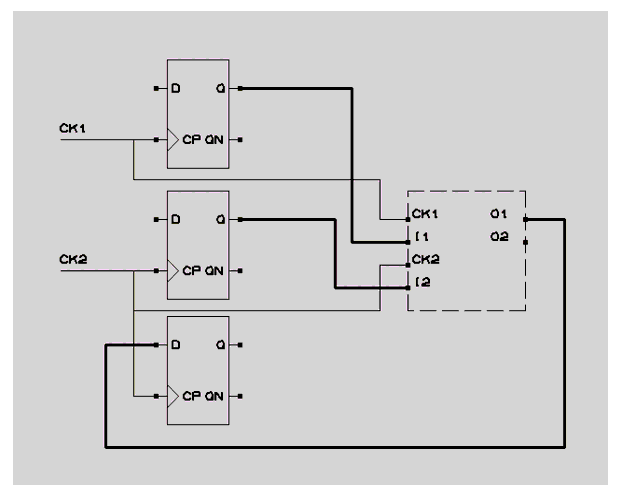
Example
The usage of the commands is as follows:
You can specify hard IP blocks and provide information about the relation between clocks and data ports of the block. A cell which is instantiated from a library and does not contain any statement (only port definition) is considered a hard IP cell. In such case, for efficient CDC checking, you can specify the relationship between data pins and clock pins.
The command to specify a given pin of the cell as a clock pin of a hard IP cell is as follows:
create_cdc_clock -name clock_name source_objectsThe following commands allow creating a relationship between a clock pin and a data pin.
set_cdc_input_delay -clock clock_name delay_value port_pin_list set_cdc_output_delay -clock clock_name delay_value port_pin_list
If such information is provided to the checker then efficient CDC checking can be performed even on designs using hard IP. Else, no checking will be possible since no connectivity information is available.
For example, the previous illustration shows a hard IP block with two clocks, two input ports, and two output ports:
Here the connection from O1 to the D input of the third flip-flop has a CDC issue that could be detected if you provide the following relations:
create_cdc_clock -name CK1 Top.HardCell.CK1 create_cdc_clock -name CK2 Top.HardCell.CK2 set_cdc_output_delay -clock CK1 10 Top.HardCell.O1 set_cdc_output_delay -clock CK2 10 Top.HardCell.O2If the cell has only one clock, all the pins will be considered to be controlled by this clock. The clock will be detected automatically by the clock inference if it is connected to other clock signals in the design.
extract_cdc_info
Use the extract_cdc_info command to run the CDC inference within the Tcl shell mode in order to refine the different parameters for this inference.
Syntax
extract_cdc_info
You need to execute this command only after elaboration. You can then use the report_cdc_info command to visualize the inferred CDC elements. You may execute this command many times, but it is important to run the clear_cdc_info command before any call.
report_cdc_info
Use the report_cdc_info command to print the inferred CDC elements on the console or to a file.
Syntax
report_cdc_info [-file filename]
Arguments
-file Specify the file name.
This command reports all the CDC elements set using the command set_cdc_group syntax. This allows you to visualize the inferred information.
When you redirect the output of this command to a file, the console does not display any information.
You can customize and source this file from the tcl_shell or the design_config file to have a clean CDC inference.
clear_cdc_info
Use the clear_cdc_info command to clear all the inferred CDC informations.
Syntax
clear_cdc_info
In the Tcl shell mode, you may be interested to try several parameters until you get the correct CDC inference. In order to do this incrementally, you can call the clear_cdc_info command to reset everything and start the inference with new parameters.
set_cdc_parameter
Use the set_cdc_parameter command to specify a value for the parameters for CDC inference.
Syntax
set_cdc_parameter [-parameter parameter_name] [-value value]
Arguments
-parameter Specify the parameter.
-value Specify the value for the parameter.
The following parameters shall be used with this command:
- NB_FFS_FOR_SYNCHRONIZER - Use this parameter to specify the number of flip-flops to be used for synchronization. The minimum value of this parameter is 2. The default value is 2.
- ALLOW_BUF_INV_IN_SYNC_FFS - This parameter is used to specify if the path between the synchronizing flip-flops contain buffers or inverters. If set to 1, the path between the synchronizing flip-flops may contain buffers or inverters. The default value is 1.
- MAX_NB_PATHS - This parameter is used to specify the maximum number of path allowed in a valid CDC Element. Above this number, the CDC element is marked invalid and not taken into account by any CDC checks.
- MAX_NB_DISPLAYED_PATHS - This parameter is used to specify the maximum paths to be displayed in a single CDC violation. The default value is 10.
- MAX_SYNCHRONIZATION_DEPTH - The CDC Inference algorithm explores the influence of control signals to find the controlled paths. This parameter is used to controls the maximum sequential depth to be explored by Leda. The default value of this parameter is set to 4, to allow Leda to detect all kinds of synchronizers. In a design using logic synchronizers, it is recommended to limit this number to 2 or 1.